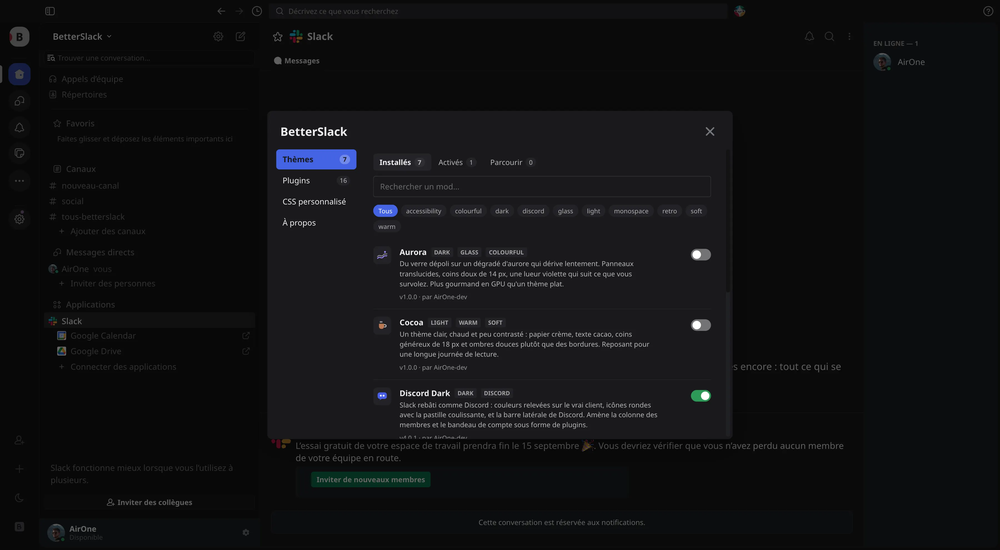
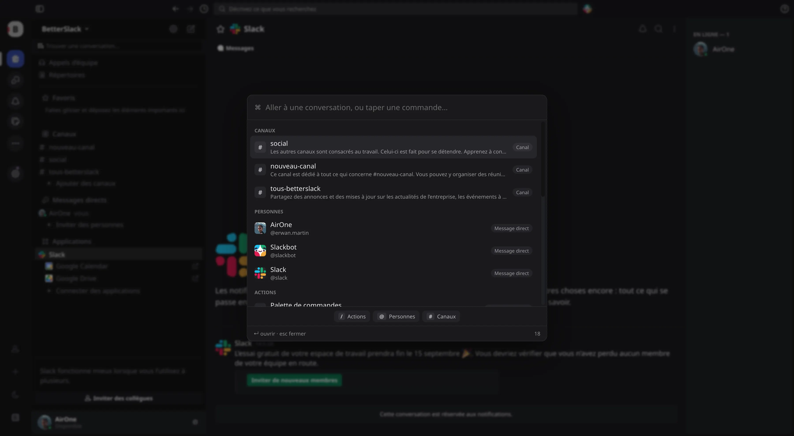
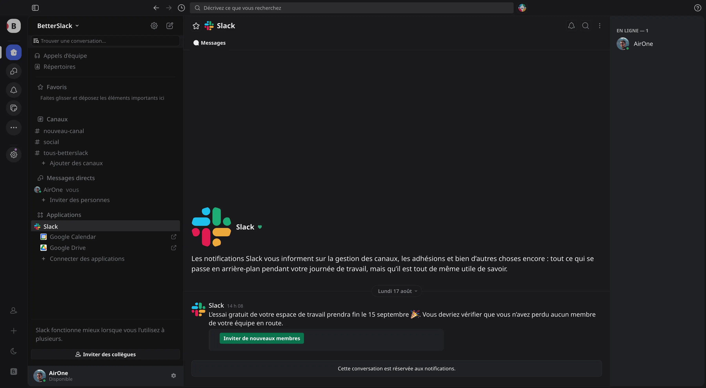
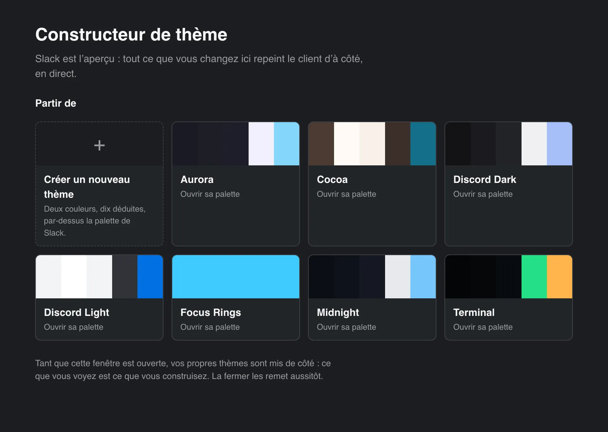
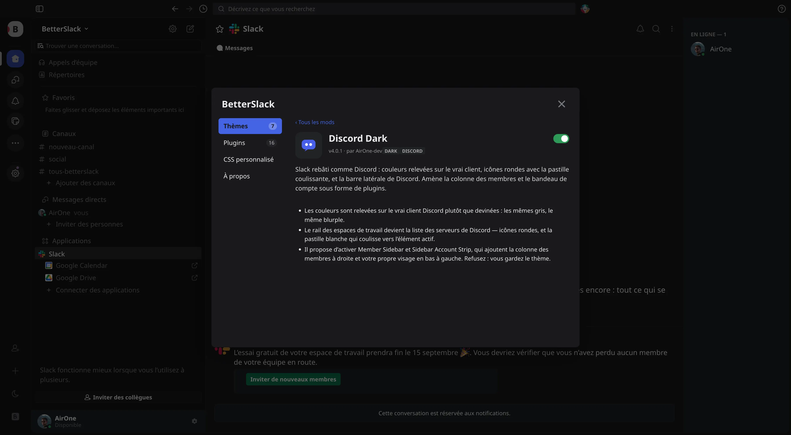

Slack.app is never touched
No patched asar, no code signature to break. Slack updates itself as usual and BetterSlack keeps working — and if you stop the loader, Slack is exactly the app you installed.
Open source · MIT · macOS, Windows, Linux
Themes, plugins, a command palette and a theme builder — inside the Slack desktop app you already use. Nothing is patched: BetterSlack attaches to the renderer, so a Slack update can never break your install.
git clone https://github.com/AirOne-dev/BetterSlack.git && cd BetterSlack
pnpm install && pnpm build && pnpm start

BetterSlack drives the Slack desktop app over the Chrome DevTools Protocol and injects a small runtime into the renderer. Everything else — themes, plugins, the panel — is built on top of that one move.
No patched asar, no code signature to break. Slack updates itself as usual and BetterSlack keeps working — and if you stop the loader, Slack is exactly the app you installed.
The usual trick opens an unauthenticated TCP port any local process can drive your session through. BetterSlack uses --remote-debugging-pipe: two file descriptors handed over at spawn time, and nothing on the network.
$ lsof -nP -iTCP -sTCP:LISTEN -p $(pgrep -x Slack)
$ # nothingA mod that wedges the renderer cannot lock you out: the next start applies nothing on its own, pnpm start --safe forces it, and a mod that throws twice is skipped until you switch it back on.
Command palette
Slack’s quick switcher, with everything Slack has no idea about in the same list: jump to any conversation, find anyone in the workspace through Slack’s own search, run any mod’s commands, switch a theme on, or open a plugin’s settings.

A theme is CSS and nothing else — no code, no permissions. Several can run at once. Each card below shows the palette read straight out of that theme’s stylesheet.
CSS reaches everything about how Slack looks and nothing about how it is arranged: it cannot move a node under a different parent, read who is signed in, or press a button. When a look needs one of those, that part is a plugin — and the theme names it.

requiresDiscord Dark is a stylesheet. It lists member-sidebar and sidebar-account in its manifest, and the panel offers to switch them on when you enable the theme.
{
"id": "discord-dark",
"type": "theme",
"entry": "theme.css",
"requires": [
"member-sidebar",
"sidebar-account"
]
}A plugin is code that keeps running after the theme is switched off, so it is never turned on quietly. Decline and the theme still applies — it is a stylesheet either way, just a plainer one.
Both plugins read Slack’s own design tokens, so they follow whatever theme is on — a member column for anyone who wants one, not a piece of Discord Dark. A theme may not style a plugin’s markup, and a test enforces it.
Theme builder
A workbench in a window of its own, painting the running client live. Pick two colours and twelve roles are derived across all four of Slack’s token families; hover a colour and the app outlines what it paints; point at anything in Slack to see the tokens behind it. It writes ordinary CSS you can commit.
While it is open, your own themes are held back — what you see is what you are building.

A plugin is an ES module that exports start(api). Everything it registers is undone when it is switched off. These ship with the project; a fresh install starts empty and you install what you want.

A mod is a folder under mods/, picked up live with no rebuild. Most of what a mod needs is one call.
// mods/plugins/hello/index.js — a complete, working plugin.
export default {
start(api) {
const t = api.i18n.strings({
en: { label: 'Say hello', done: 'Hello' },
fr: { label: 'Dire bonjour', done: 'Bonjour' },
});
api.slack.addToolbarButton('channelHeader', {
id: 'hello',
label: t('label'),
icon: '<svg viewBox="0 0 20 20">…</svg>',
onClick: () => api.ui.toast(t('done'), { variant: 'success' }),
});
// Findable by typing, without taking a button in Slack's rail.
api.commands.add({ id: 'hello', title: t('label'), run: () => api.ui.toast(t('done')) });
},
};/* mods/themes/my-theme/theme.css — change tokens, not class names.
Slack's class names churn with every release; its design tokens do not. */
:root,
.sk-client-theme--light,
.sk-client-theme--dark {
--dt_color-base-pry: #101418; /* the message surface */
--dt_color-content-pry: #e6e9ef; /* body text */
--dt_color-content-hgl-1: #6cb6ff; /* links */
/* The chrome is a second family, and it needs !important. */
--dt_color-theme-rail_background: #0b0e12 !important;
--dt_color-theme-sidebar_background: #0f141a !important;
}{
"id": "hello",
"name": "Hello",
"type": "plugin",
"version": "1.0.0",
"author": "your-github-handle",
"description": "One sentence about what a user gets, not how it works.",
"entry": "index.js",
"settings": [
{ "key": "loud", "type": "boolean", "label": "Shout it", "default": false }
],
"betterslackApi": 1
}// The first thing to reach for: most mods are one or two of these.
const zen = api.helpers.toggle({ // a persisted flag + a class on <html>
key: 'on',
whenOn: `& .p-channel_sidebar { display: none !important; }`,
});
api.helpers.hotkey('mod+shift+z', () => zen.toggle());
api.helpers.mount(container, 'my-node', build); // survives Slack's re-renders
api.helpers.poll(refresh, 60_000); // stops while the window is hidden
// Slack's own web API, without ever seeing the token.
const users = await api.slack.web.users(['U1', 'U2']); // one request, cached
const { state } = await api.slack.web.availability('U1'); // 'active' | 'away' | 'dnd'entry is only where the app starts reading. Split the rest however you like — relative imports inside your own folder, @import for a theme’s CSS.
Every mod ships a test.mjs, run against a Slack-shaped DOM and a recording stand-in for the API — no Slack, no Electron, no network.
A plugin runs unsandboxed in an authenticated Slack tab, so the code review is the security model. Mods from outside the catalogue can be installed, behind an explicit warning.
Node 18+ (22+ through Corepack), pnpm, and the Slack desktop app. corepack enable gets you pnpm.
git clone https://github.com/AirOne-dev/BetterSlack.git
cd BetterSlack
pnpm install && pnpm build
pnpm start
pnpm start restarts Slack with BetterSlack attached and stays running — mods are active as long as it does. Nothing is installed on a fresh setup: open the panel with ⌘⇧M and install what you want from Browse.
On macOS, pnpm build-app puts a BetterSlack.app in dist/ so you can start it from Spotlight or your login items instead of a terminal. It runs this checkout rather than bundling it, so keep the folder where it is.
